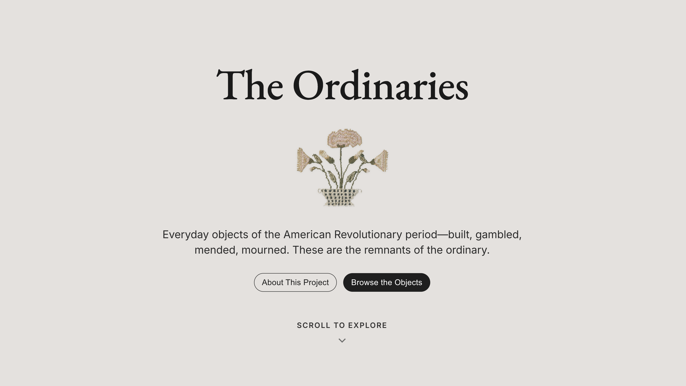
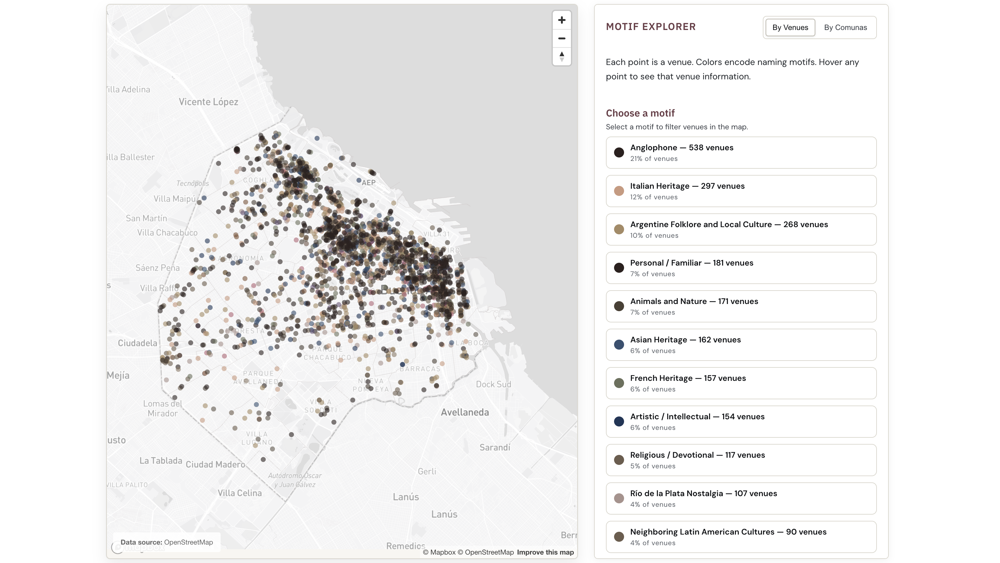
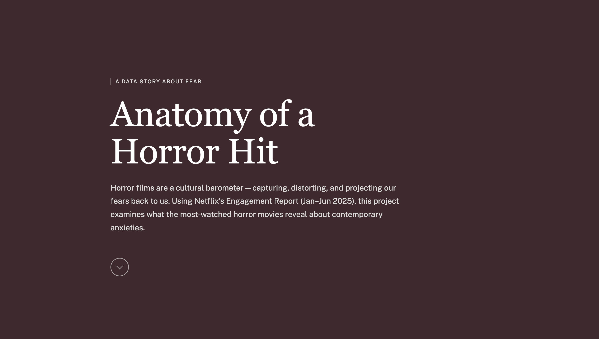
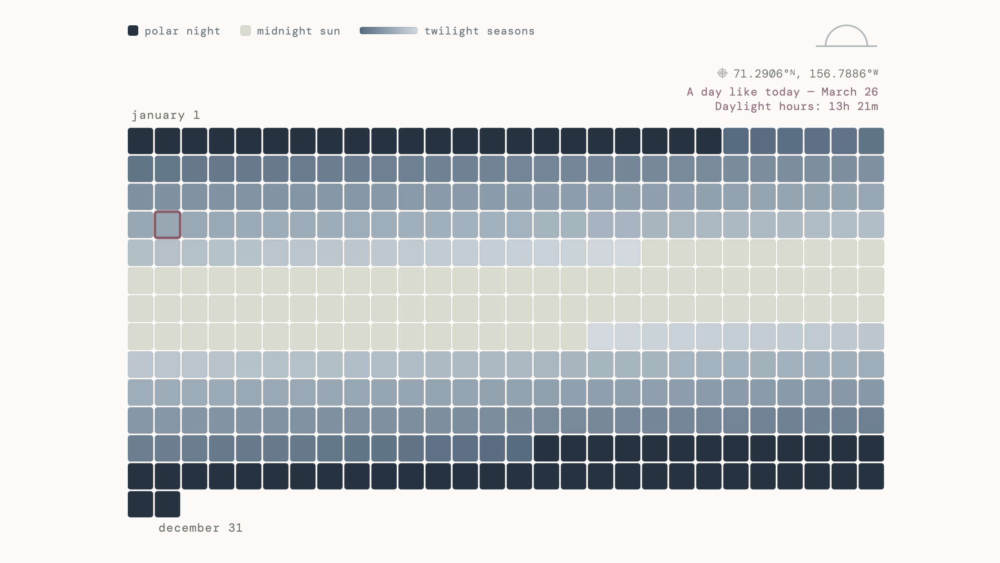
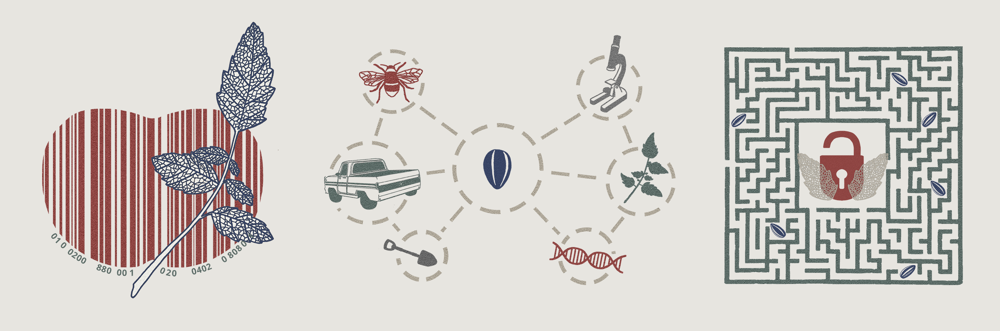

The Ordinaries
An interactive archive of everyday objects from Revolutionary-era America, drawn from 12,667 records across four Smithsonian museums.

Naming a City
A city's identity, written in its storefronts. Mapping what the names of Buenos Aires cafés, bars, and libraries reveal about its cultural geography.

Anatomy of a Horror Hit
Horror films as cultural barometer. Using Netflix's Engagement Report to examine what the most-watched titles reveal about contemporary anxieties.

Seasons of Light
A year of daylight in Utqiaġvik, Alaska — where time fractures between polar night and midnight sun. Each tile marks a day, colored by its share of light.

Reencantar las Semillas
Cover art for the Bioleft podcast on open-source seeds and collaborative science.

Abierto al Cielo
Digital story illustration.